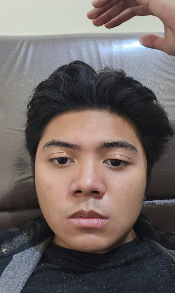

"Work Hard, Play Hard"

Saya adalah mahasiswa Universitas Brawijaya yang memiliki minat besar dalam desain web dan pemrograman. Selalu berusaha untuk berkembang dan mendalami keterampilan baru di dunia digital.
Saya lahir di Jakarta pada 10 Juni 2005. Saat berusia lima tahun, saya pindah ke Amerika Serikat dan menghabiskan masa kecil di sana. Keluarga saya pertama kali menetap di Los Angeles, California, hingga tahun 2012, sebelum akhirnya pindah ke Dallas, Texas. Tinggal di dua kota berbeda memberi saya banyak pengalaman dan wawasan baru yang membentuk cara saya berpikir. Pada akhir tahun 2017, saya kembali ke Jakarta, Indonesia, dan menetap di sini sampai sekarang.
Sejak kecil, saya selalu tertarik dengan teknologi dan dunia digital. Saya terpesona dengan bagaimana situs web, aplikasi, dan sistem digital bekerja, yang membuat saya penasaran akan cara kerja di baliknya. Gagasan bahwa seseorang dapat menciptakan sesuatu yang begitu kompleks dan interaktif hanya dengan pemikiran serta kreativitasnya sangat menarik bagi saya.
Seiring bertambahnya usia, minat saya terhadap teknologi semakin berkembang dan mendorong saya untuk mendalami bidang yang sesuai dengan passion saya. Saya ingin terus mengasah keterampilan dalam pengembangan web, rekayasa perangkat lunak, serta inovasi digital. Saya percaya bahwa teknologi memiliki kekuatan untuk membentuk masa depan, dan saya sangat antusias untuk menjadi bagian dari perjalanan tersebut.